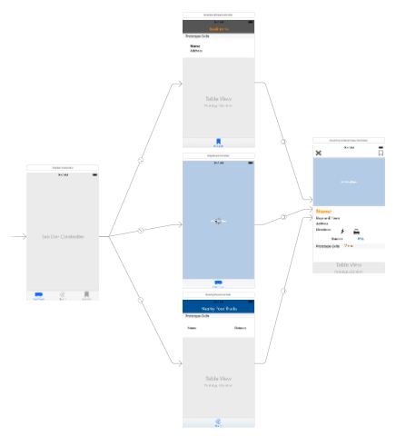
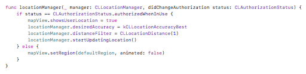
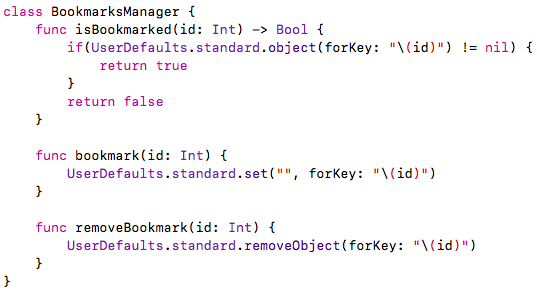
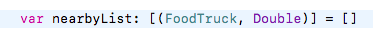
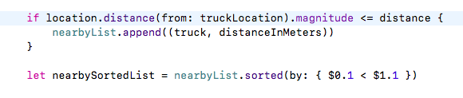

Food Truck iOS Application
Design
Creating a App designed to find food trucks located in San Francisco based on acquired JSON data supplied by the city. The user can save food trucks to a favorites list making use of CoreData. A walking route and driving route based on the closest distance to the users current location is drawn out on the map. The user is able to look at food truck specifics, such as location and store hours through both map annotations and an advanced detail display.
Architecture/Tools
Languages: Swift, JSON
MVC Architecture
xCode
Cocoapods
Alamofire
JSON data
Initially used Google Maps API, but switched to the more native MapKit
Git for version control
App Flow
Code
Display Map
Foodtruck longitude and latitude values are acquired through acquired JSON data provided by San Francisco and displayed on the map
Display Markers
* Acquire coordinates from parsed JSON data
* Add each coordinate as annotation to MapView
* Register MarkerView and ClusterView to MapView
* Keep track of other food truck attributes as well
Map Annotation and Callout
* Separate view for map annotations
* Display food truck name and schedule
* Brings you to an advanced details view
Map Clustering
To deal with 600+ Pins around same location
Reduce visual data clutter for better user experience
Food Truck Advanced Detail
* Displays more helpful details
* Option to bookmark a favorite food truck
Food Truck Bookmarks
* On app closure, data remains intact
* UserDefaults and CoreData

Nearby Food Truck
* Display the nearest trucks based on the user’s current location
* Shows the distance from user location to the destination food truck
* Table updates whenever device moves more than mile


Nice to Have Features
* Search for specific food items/type of foods, maybe category based
* Expanding dataset to show more food trucks
* Make it easier to remove and edit bookmarks
Struggles and Difficulties
Not committing to master until stable build release (Pull Requests)
Google Map API vs MapKit
Understanding how to deal with Pod Files
Non Compatible XCode Version
Dependencies (one feature requires another to be finished first)
Simulating Walking
for testing whether map direction line updates properly
for testing whether nearby table updates properly
Constraints
Different screen sizes
Conclusion
Application gave me insight to the world of mobile development. Compared to website development, mobile application development
is more restrictive in terms of memory footprint and screen rendering. Having a responsive mobile application is crucial given
the hardware constraints of mobile devices. Using xCode's storyboard to create UI elements made development much easier.